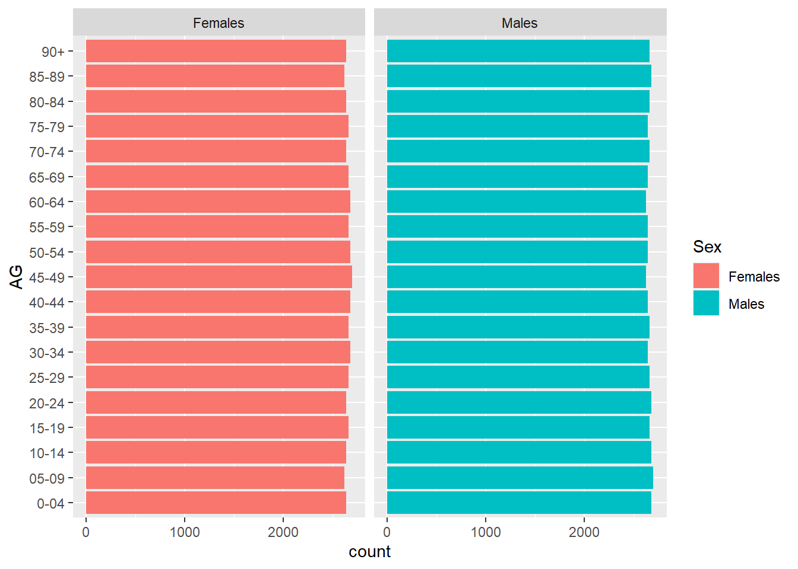

pacman::p_load(tidyverse)Take-home Exercise 2
1. Overview
This Take-home Exercise 2 is a critique of a classmate’s Take-home Exercise 1 in terms of clarity and aesthetics.
The task for Take-home Exercise 1 is to produce age-sex pyramids in a trellis display to reveal the age group and gender demographic structures of 9 planning areas in Singapore using the “Singapore Residents by Planning Area, Subzone, Age Group, Sex, and Type of Dwelling, June 2022” dataset from the Department of Statistics, Singapore.
The original design was created using Tableau but will now be redone in R Studio, using data visualization principles and best practices learnt so far in the course.
2. Critique of Original Design
2.1 Original Design

2.2 Clarity
X-Axis Range
When comparing across visual charts, especially ones like age-sex pyramids, people take first impressions base on sweeping visual cues such as comparing the shapes of the pyramid, length of the bars, etc. without looking too much into the details. When the x-axis range is inconsistent like in this case, it will immediately give the wrong interpretations. For example, Ang Mo Kio and Jurong West appears to be similarly shaped and one would interpret that they largely have the same population size. However this is a false interpretation because Ang Mo Kio’s x-axis is scaled to 6,000 while Jurong West is scaled to 10,000.
The x-axis is not just inconsistent between the different planning areas but also different within some of the same planning area. For example, Novena has inconsistent range values and also intervals.
Y-Axis Label
While it is quite intuitive to guess that the numbers on the y-axis represents ages since this is called an age-sex pyramid, it would still be good to label it.
2.3 Aesthetics
Duplicate Displays
It is quite confusing to have duplicate displays of the age-sex pyramids - one in a single row and the other in a 3x3 grid - as people will assume there is a difference. The purpose of this is unclear but it appears from the chart titles (which are also confusing) that the 3x3 grid is supposed to be more detailed than the single row. However it does not really show more detail so since they are exactly the same except they are more spaced out. The single row display is unnecessary.
The one positive of the single row display is that at least the x-axis ranges appear to be consistent across all the pyramids.
3. New Design
3.1 Data Preparation
Installing (if required) and launching necessary R packages:
Loading the data:
popdata <- read_csv("data/respopagesextod2022.csv")Reformatting Age Group:
agegrp = c("0_to_4", "5_to_9", "10_to_14", "15_to_19",
"20_to_24", "25_to_29", "30_to_34", "35_to_39",
"40_to_44", "45_to_49", "50_to_54", "55_to_59",
"60_to_64", "65_to_69", "70_to_74", "75_to_79",
"80_to_84", "85_to_89", "90_and_over")
for (a in agegrp){
popdata$AG[popdata$AG == a] <- c("0-04", "05-09", "10-14", "15-19",
"20-24", "25-29", "30-34", "35-39",
"40-44", "45-49", "50-54", "55-59",
"60-64", "65-69", "70-74", "75-79",
"80-84", "85-89", "90+")
}3.2 Final Design
ggplot(popdata,
aes(x = AG, fill = Sex)) +
geom_bar() +
facet_wrap(~ Sex) +
coord_flip()